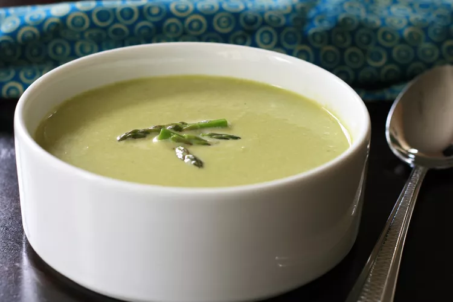

Instant Pot Asparagus Brie Soup
This creamy asparagus soup comes together in no time in your Instant Pot®. The Brie adds a subtle flavor
and
contributes
to the creaminess of the soup, without being overpowering. Perfect to make for Sunday brunch with the
girls,
or
a dinner
party starter with friends. Garnish with garlic croutons and freshly-grated lemon zest, if desired.

Ingredients
- 2 tablespoons olive oil
- 1/2 cup shallots, minced
- 3 cloves garlic, minced
- 2 pounds asparagus spears, trimmed and cut into 1 inch pieces
- 4 cups chicken broth
- 1 teaspoon salt
- 1/4 teaspoon freshly ground black pepper
- 4 ounces brie, rind removed and but into 1 inch pieces
- 1/2 cup heavy cream
Directions
-
Turn on a multi-functional pressure cooker (such as Instant Pot®) and select Saute function. Heat oil
over
medium heat.
Add shallots and garlic and stir for 1 minute, taking care not to burn them. Add in asparagus pieces and
stir to
combine. Continue to saute until softened, 3 to 4 minutes.
-
Pour chicken broth into the pot. Season with salt and pepper. Close and lock the lid. Select high
pressure
according to
manufacturer's instructions; set timer for 5 minutes. Allow 10 to 15 minutes for pressure to build.
-
Release pressure carefully using the quick-release method according to manufacturer's instructions, about
5
minutes.
Unlock and remove the lid. Remove a few pieces of asparagus tops to use for garnish and set aside.
-
Add Brie pieces to soup in the Instant Pot. Use an immersion blender to blend the soup until creamy and
smooth. Stir in
heavy cream. Adjust seasoning with salt and pepper if needed. Ladle into bowls and garnish with reserved
asparagus tops.